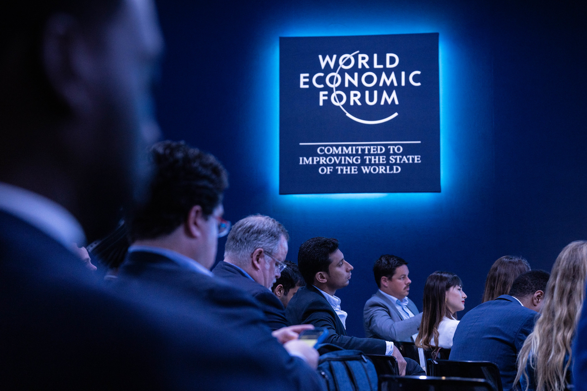

Video scripts: ideas, information research, storyboards, copy for the voice-overs
Ministry of Digital Transformation at the World Economic Forum 2022
↓
During the first three months of the full-scale invasion,
the Ministry of Digital Transformation came up with, launched,
and saw positive results from numerous unplanned digital projects.
Each project, in its way, helped bring Ukraine closer to victory.
The Minister of Digital Transformation, Mykhailo Fedorov, himself presented
these projects at Davos, Switzerland's 2022 World Economic Forum.

My task was to collaborate with the video editor to create detailed and clear video presentations of three projects for the international delegations.
To do this, I gathered information on each project, highlighted the key points, wrote the copy for the voiceovers and captions, and provided the video editor with storyboards and shot breakdowns.
New services on Diia during the wartime
IT Army of Ukraine
How Starlink saved Internet coverage in Ukraine